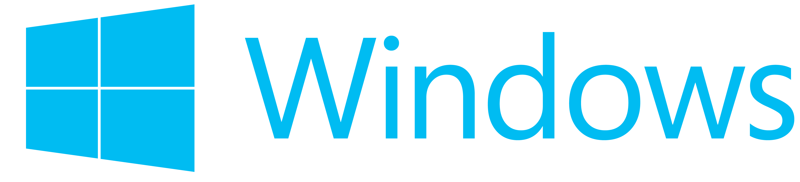
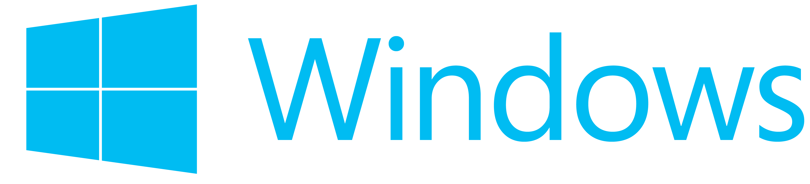
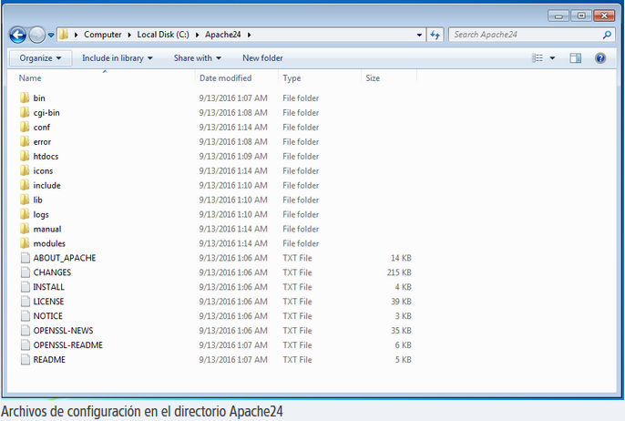

Introducción
El servidor HTTP Apache es un servidor web HTTP de código abierto, para plataformas Unix (BSD, GNU/Linux, etc.), Microsoft Windows,
Macintosh y otras, que implementa el protocolo HTTP/1.12 y la noción de sitio virtual.
La historia de Apache se remonta a febrero de 1995, donde empieza el proyecto del grupo Apache, el cual esta basado en el servidor
Apache httpd de la aplicación original de NCSA. El desarrollo de esta aplicación original se estancó por algún tiempo tras la
marcha de Rob McCool.
Fueron Brian Behlendorf y Cliff Skolnick quienes a través de una lista de correo coordinaron el trabajo y lograron establecer un
espacio compartido de libre acceso para los desarrolladores.
En 1999, se formó la Fundación de Software Apache (Apache Software Foundation) para obtener apoyo financiero, organizativo y legal
para el servidor.
Entre las principales características de Apache, se encuentran...:
- Soporte de seguridad SSL y TLS.
- Puede realizar autentificación de datos utilizando SGDB.
- Puede dar soporte a diferentes lenguajes, como Perl, PHP, Python y tcl.
- Coste. El servidor web Apache es completamente gratuito.
- Funcional y Soporte. Alta aceptación en la red y muy popular
- Multi-plataforma. Se puede instalar en muchos sistemas operativos, es compatible con Windows, Linux y MacOS.

Descarga
A lo largo de la guía encontrarás detalladamente qué archivos son los necesarios para la instalación del servidor Apache y cuándo utilizarlos,
así como del módulo PHP. Te dejamos a continuación en esta sección todos los necesarios:
Archivos binarios ejecutables para Windows:
-Apache Lounge Ir al sitio
-Apache Haus Ir al sitio
Entorno de ejecución Visual C++:
-Visual C++ Redistributable packages Ir al sitio
Descarga del módulo de PHP para Windows:
-PHP Ir al sitio

Instalación
El servidor Apache constituye un software libre y de código abierto para servidores web desarrollado por la Apache Software
Foundation, que lo pone a disposición de la comunidad internauta de forma gratuita. Por regla general, escucha las peticiones
HTTP en el puerto 80 y responde entregando documentos en HTML. Gracias a su construcción modular permite integrar diversas
funciones. Lo más habitual es combinarlo con bases de datos como MySQL y lenguajes de programación del lado del servidor como
PHP, Perl o Python, que permiten servir páginas web dinámicas.
El servidor web más popular a nivel mundial es Apache HTTP, que forma parte de diversos paquetes de software como LAMP, MAMP, WAMP o XAMPP.
A continuación, nos centraremos en la instalación y configuración del servidor web como componente aislado.
Para poder ejecutar Apache en tu ordenador Windows lo único que necesitas es el paquete de software adecuado para tu sistema
operativo. En su página web, sin embargo, la fundación Apache Software solo pone a disposición el código fuente. Los archivos
binarios ejecutables para Windows se encuentran en páginas como Apache Lounge o Apache Haus. Este tutorial se basa en la versión
2.4.20 para sistemas de 64 bits descargada en el Apache Lounge (la versión disponible para descargar es siempre la más actual).
Para utilizar Apache con Windows no necesitas instalar el programa. En lugar de ello, procede como te indicamos a continuación:
1. Guarda el archivo .zip con el paquete de software en una carpeta de tu ordenador local.
2. Descomprime el archivo haciendo doble clic sobre el icono de la carpeta.
3. Copia la carpeta Apache24 en C:\.
Ahora, todos los archivos que necesitas para la puesta en funcionamiento de tu servidor web Apache local se encuentran en C:\Apache24.

Tras la instalación es recomendable realizar una prueba. Para ello, dirígete a C:/Apache24 y abre la carpeta bin. Aquí se encuentra
la aplicación httpd. Haciendo doble clic se inicia Apache.
Por regla general, el sistema mostrará dos mensajes de error que indican, por un lado, que aún se han de instalar algunos componentes
de software y, por el otro, que el firewall del sistema operativo bloquea al servidor.
Error del sistema httpd.exe
Si instalas Apache en tu ordenador por primera vez, probablemente el sistema te hará saber que no se puede iniciar el servidor web
porque no se ha encontrado el archivo VCRUNTIME140.dll.
Este problema tiene solución y es precisamente la instalación de los componentes que faltan. Al estar escrito en C++, Apache
necesita un entorno de ejecución adecuado, en este caso Visual C++. También conocido como Microsoft Visual C++, se trata de un
entorno de desarrollo integrado para aplicaciones en C, C++ y C++/CLI en el entorno Windows. Con los denominados Visual C++
Redistributable Packages, se pueden instalar aquellos componentes del entorno de ejecución que falten, disponibles de forma
gratuita en la página principal de Microsoft. Se instalan localmente haciendo doble clic en el archivo .exe.
Aviso de seguridad del cortafuegos de Windows
Habitualmente, todos los ordenadores están asegurados por un firewall que impide que programas externos accedan sin permiso al
sistema desde una red. Si quieres que tu servidor Apache HTTP local esté disponible en una red doméstica o de oficina, has de
autorizar la comunicación de Apache en esta red de forma explícita. Esto se realiza en la misma notificación de seguridad que
te informa de que el cortafuegos ha bloqueado algunas funciones del servidor.
Para autorizar el acceso a tu servidor en una de las redes disponibles, solo tienes que marcar la opción correspondiente y hacer
clic en el botón de confirmación (“Allow Access”). Es muy probable que necesites derechos de administrador para llevar a cabo
esta acción.
Tan pronto como se hayan instalado los componentes que faltaban y se hayan realizado los ajustes en el cortafuegos
de acuerdo al modelo de uso que se tiene planificado, nada impedirá el funcionamiento del servidor Apache HTTP en su configuración
predeterminada.
Inicia el servidor de nuevo con un doble clic en el archivo httpd. Acto seguido, se abre de forma automática
una ventana de comandos en negro. Cuando quieras interrumpir el servidor, solo tienes que cerrar la ventana haciendo clic en
la “x” de la esquina superior derecha.
Para acceder a tu servidor desde un navegador web, teclea “localhost” o la dirección IP estándar “127.0.0.1” en la barra de
navegación.
Si los ajustes se realizaron correctamente, el navegador debería mostrar una página index.html predeterminada con el siguiente
contenido “It works!” (¡Funciona!).

Configuración
En principio, el servidor Apache HTTP, como paquete de software, está configurado por defecto de tal manera que podría funcionar
sin ajustes adicionales. Los contenidos que quieras abrir con el servidor web se guardan en la configuración estándar en la
carpeta htdocs en C:\Apache24 (C:/Apache24/htdocs) identificada como “DocumentRoot”, dentro del archivo de configuración httpd.conf.
Si quieres guardar los documentos y los archivos de tu página web en otra carpeta diferente, la has de registrar en httpd.conf
como “DocumentRoot” y “Directory”.
Como demostración hemos creado una nueva carpeta llamada “MyWeb” en C:\, que ha de servir de archivo para una página web
ficticia. En esta carpeta depositamos los dos documentos HTML test-1 y test-2.
En el archivo httpd.conf cambiamos la información en “DocumentRoot” y “Directory” en función de nuestras nuevas carpetas,
sustituyendo “C:/Apache24/htdocs” por “C:/MyWeb” en ambos puestos.
Tras reiniciar Apache, accede al servidor con la dirección localhost y el navegador web mostrará el Index de nuestro directorio
con las páginas HTML test-1.html y test-2.html.
Se puede comprobar si se llevaron a cabo los cambios satisfactoriamente accediendo al Index del directorio web tras
reiniciar el servidor web vía localhost

Módulo PHP
Una vez instalado Apache será necesario instalar PHP el cual podemos descargar desde el enlace de la sección descargas.
Una vez descargado extraeremos el contenido en una carpeta la cual renombraremos php y la pegaremos en la raíz de C:
Allí editaremos el archivo INI, bien sea el de producción o desarrollo, y estableceremos la siguiente línea:
extension_dir = “C:phpext”
Allí podremos permitir otras extensiones según sea necesario como: Curl, GD, MySQL. A continuación iremos a
Panel de control\Sistema y seguridad\Sistema
Allí pulsamos en la opción Configuración avanzada del sistema y será desplegada la siguiente ventana:
Allí pulsamos en el botón Variables de entorno y en la nueva ventana vamos a la sección Variables del sistema ubicamos la
línea Path y pulsamos en el botón Editar:
En la ventana desplegada pulsamos en el botón Nuevo y añadiremos la línea C:\php:
Pulsamos en Aceptar para guardar los cambios. Después de configurar la variable de entorno, es necesario reiniciar el sistema.
Ahora debemos editar el archivo de configuración de Apache y añadir las siguientes líneas en la parte inferior del archivo y
guardamos los cambios.
C:Apache24Confhttpd.confLoadModule php5_module “c:/php/php5apache2_4.dll”
AddHandler application/x-httpd-php .php
# configure the path to php.ini
PHPIniDir “C:/php”
Fuentes: Fuente 1,
Fuente 2